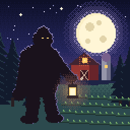

Privacy Policy
Cryptid Hollow, by Jobin LLC. Effective November 10, 2026.
The short version: Cryptid Hollow has no ads, no tracking and no analytics. We don't ask for your name, email address or location, and we never sell or share your data. Your farm is saved on your device and in your own iCloud account.
What the game stores
- Your farm and progress. Your crops, buildings, coins, Moonstones and settings are saved on your device. If you're signed in to iCloud, a copy is also kept in your own iCloud account so your farm can move between your devices. Apple stores this; Jobin LLC can't see it.
- Settings. Choices like sound, music and reminders are saved on your device.
Sharing your farm (optional)
If you tap Share my farm, the game puts a picture of your farm's layout, your farm's name (put together from word lists in the game, never typed in), your level and a random farm code in Apple's CloudKit public database. Other players can then visit your farm with that code and send you gifts. A gift stores the farm codes it was sent from and to, and what it contains. None of this is linked to your name, Apple Account or any other personal information. If you never share your farm, nothing is uploaded.
Game Center
Achievements and leaderboards use Apple's Game Center. If you're signed in to Game Center, Apple handles your Game Center name and scores under Apple's privacy policy.
Purchases
Moonstones and the Hollow Pass are bought through the App Store. Apple processes every payment, so Jobin LLC never sees your payment details. The game only receives a confirmation from Apple so it can add what you bought.
Reminders
If you allow notifications, reminders (like "Your fields are ready!") are scheduled on your device. They aren't sent from a server, and you can turn them off in the game's settings or in iOS Settings.
What we don't do
- No advertising, and no ad or tracking SDKs.
- No analytics or third-party data collection.
- No accounts, logins, chat or typed messages between players.
- No selling, renting or sharing of data with anyone.
Children
Cryptid Hollow is made for everyone and is kept suitable for younger players. It doesn't knowingly collect personal information from anyone, including children under 13.
Deleting your data
Deleting the app removes the save on your device. You can remove the iCloud copy in iOS Settings under your name, then iCloud, then Manage Account Storage. To have a shared farm and its gifts removed from the public database, email us your farm code (you'll find it on the Friends tab at the farmhouse).
Changes
If this policy changes, the new version will be posted on this page with a new effective date.
Contact
Questions? Email mattstrattdev@icloud.com.